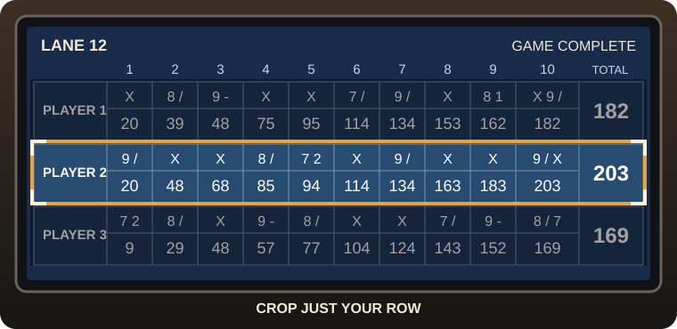

Score every frame.
Tap the pins knocked down or track exact pin positions. BowlBoard handles strikes, spares and bonus rolls.
 Try for free
Try for free BUILT FOR BOWLERS
Keep a record of your bowling, from league nights to practice games. Enter your scores as you bowl or simply snap a picture of the final scoreboard.
No account required to start. Optional account sync.


BUILT FOR BOWLERS
Illustrative app preview
THE FEATURES
Everything you need to record your games and understand your performance.
Tap the pins knocked down or track exact pin positions. BowlBoard handles strikes, spares and bonus rolls.
Browse individual games, sessions and calendar views. Track leagues, centers, equipment and more.
Follow your average, personal bests, strike and spare rates, and trends over recent games.
Feature illustrations use example data.
SCOREBOARD SCANNING
No paper scoresheet needed. Take a photo of the electronic scoreboard at the bowling alley, even with multiple players on the screen.

SIMPLE PRICING
Build your bowling history without paying to get started.
BOWLBOARD
Start recording games and exploring BowlBoard today.
Try BowlBoard for Free ↗FUTURE PREMIUM OPTIONS
Optional paid features are planned. Details, pricing and availability will be announced when ready.
Not available for purchase yet.YOUR DATA
Use BowlBoard without an account, keep records on your device, or sign in for cloud sync. Export your records when you need a copy.
Read our Privacy Policy ↗GOOD TO KNOW
No. You can start scoring locally. An account is optional and enables cloud synchronization.
Yes. Photograph the screen and select your own row. Review the results before saving, as recognition can make mistakes.
Yes, you can use the web app in Safari and add it to your Home Screen. An App Store release is planned, but not yet available.
Yes, it is free to start. Optional premium features are planned; no paid plan is currently being offered.
Visit Support for help with scores, account sync, or other questions.
BUILT FOR BOWLERS
Make your next game the start of something better.
Try BowlBoard for Free ↗